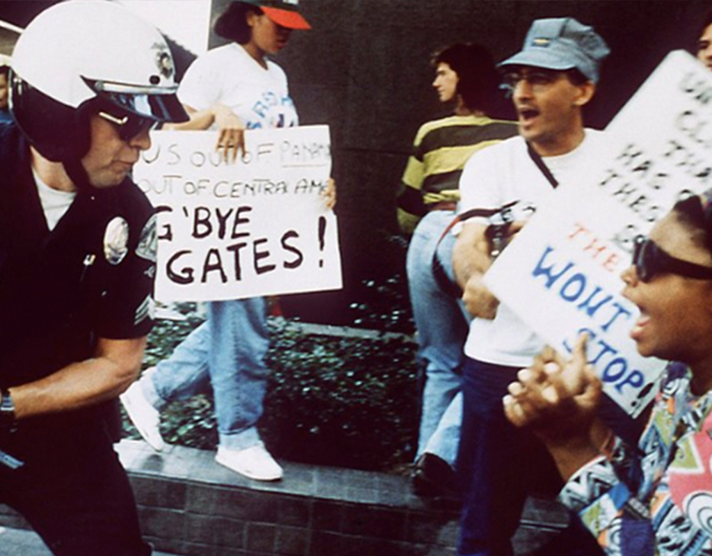
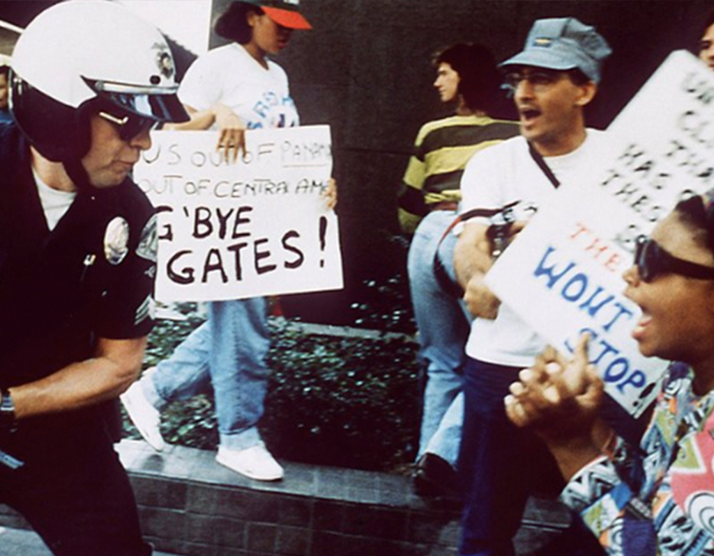

Police Brutality
1990 - Today
Four years ago today, an unarmed black teenager named Michael Brown was shot and killed by Darren Wilson, a white police officer in Ferguson, Missouri. In an instant, police brutality and the outcry that black lives matter were brought to the front of the nation's consciousness. Michael's death galvanized the nation in a manner never seen before. It didn't just inspire protests — it helped spark a movement that has captured the country's collective heart, mind, and soul. Instances of police brutality are being recorded by everyday people, hashtags are used to advocate for legislative change, and the stories of unarmed black men and women subjected to excessive force are being told. Michael Brown's death awakened the nation to the data and circumstances around brutality, and the systemic problems that allow officers to routinely avoid any discipline.
How Sports & Politics Play A Role
If we've learned one thing about Donald Trump over the past few months, it's that he's not afraid to speak his mind when it comes to the NFL's national anthem issue. Trump has made it clear on multiple occasions that he believes that all players should stand for the national anthem at all times, and now, he has actually proposed a national anthem-related rule that he would like to see the NFL implement. Trump's proposal to the NFL? If a player kneels for the national anthem, eject him from the game. Then, if a player kneels for the national anthem a second time, suspend him for the season.

Trump tweeted out the proposal on Friday and called out NFL commissioner Roger Goodell in the process. "The $40,000,000 Commissioner must now make a stand," Trump wrote.This is the first time Trump has publicly pushed an anthem policy since September, when he said that players who kneel should be cut from the team. Despite what Trump wrote, NFL contracts do not require players to stand for the anthem. It's probably not a coincidence that Trump offered his latest proposal when he did. Trump's tweet came less than 24 hours after the NFL decided to postpone the implementation of its new national anthem policy. The league announced that, "No new rules relating to the anthem will be issued or enforced for the next several weeks."
In the meantime, the league said it will work with the NFLPA to hash out a new policy. With no official policy in place, Trump decided to fill the void with his own. Before Thursday's announcement by the league, the new anthem rule was scheduled to take effect for the 2018 season after being approved at the NFL Spring Meeting in May. As it was written, the new rule called for all players and personnel to "show respect for the flag and the anthem." The rule also would've allowed players to stay in the locker room during the national anthem if they didn't want to be on the field. It's not clear if the NFL will respond to Trump's proposal (highly unlikely), but we do know that at least one owner is getting tired of listening to the president talk about the national anthem issue.
Mapping Police Violence
click map
Law enforcement agencies across the country have failed to provide us with even basic information about the lives they have taken. And while the recently signed Death in Custody Reporting Act mandates this data be reported, its unclear whether police departments will actually comply with this mandate and, even if they do decide to report this information, it could be several years before the data is fully collected, compiled and made public. We cannot wait to know the true scale of police violence against our communities. And in a country where at least three people are killed by police every day, we cannot wait for police departments to provide us with these answers. The maps and charts on this site aim to provide us with the answers we need.
La Riots
1992
The 1992 Los Angeles riots were a series of riots and civil disturbances that occurred in Los Angeles County in April and May of 1992. Unrest began in South Central Los Angeles on April 29, after a trial jury acquitted four officers of the Los Angeles Police Department (LAPD) for usage of excessive force in the arrest and beating of Rodney King, which had been videotaped and widely viewed in TV broadcasts.The rioting spread throughout the Los Angeles metropolitan area, as thousands of people rioted over a six-day period following the announcement of the verdict. Widespread looting, assault, arson, and murder occurred during the riots, and estimates of property damage were over $1 billion.
On the evening of March 3, 1991, Rodney King and two passengers were driving west on the Foothill Freeway (I-210) through the Lake View Terrace neighborhood of Los Angeles. The California Highway Patrol (CHP) attempted to initiate a traffic stop. A high-speed pursuit ensued with speeds estimated at up to 115 mph (185 km/h), along freeways and then through residential neighborhoods. When King stopped, CHP Officer Timothy Singer and CHP Officer Melanie Singer (Timothy Singer's wife), arrested him and two other occupants of the car. After the two passengers were placed in the patrol car, five white Los Angeles Police Department (LAPD) officers—Stacey Koon, Laurence Powell, Timothy Wind, Theodore Briseno, and Rolando Solano—surrounded King, who came out of the car last. They tasered him, struck him dozens of times with side-handled batons, and tackled him to the ground before handcuffing him. Sergeant Koon later testified at trial that King resisted arrest, and that he believed King was under the influence of PCP at the time of the arrest, which caused him to be very aggressive and violent toward the officers. Video footage of the arrest showed that King attempted to get up each time he was struck, and that the police made no attempt to cuff him until he lay still.A subsequent test of King for the presence of PCP in his body at the time of the arrest was negative.
Unknown to the police and King, the incident was captured on a camcorder by local civilian George Holliday from his nearby apartment. The tape was roughly 12 minutes long. While the tape was presented during trial, some clips of the incident were not released to the public.[11] In a later interview, King, who was on parole for a robbery conviction and had past convictions for assault, battery and robbery, said that he had not surrendered earlier because he was driving while intoxicated under the influence of alcohol, which he knew violated the terms of his parole. The footage of King being beaten by police became an instant focus of media attention and a rallying point for activists in Los Angeles and around the United States.